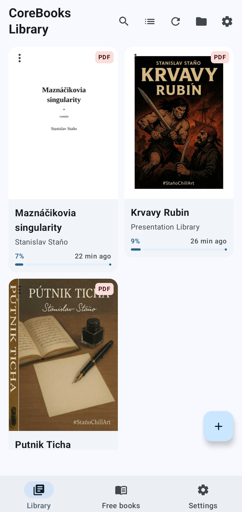
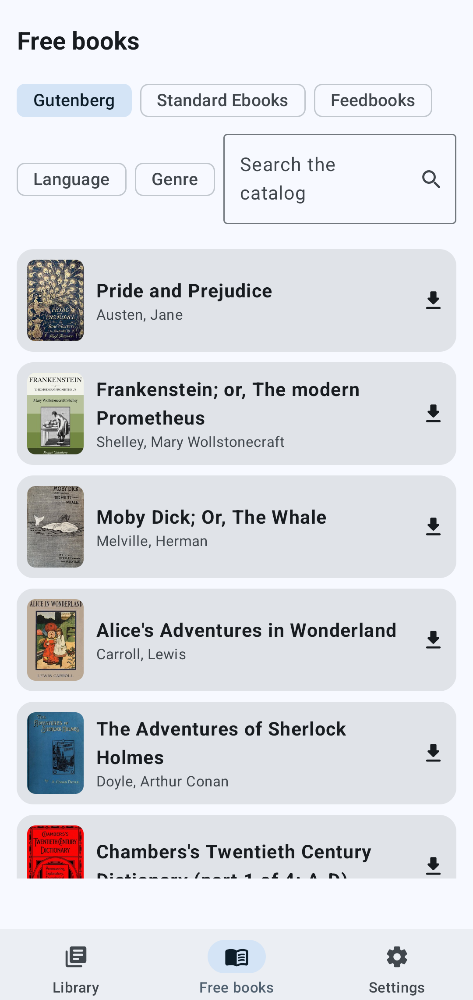
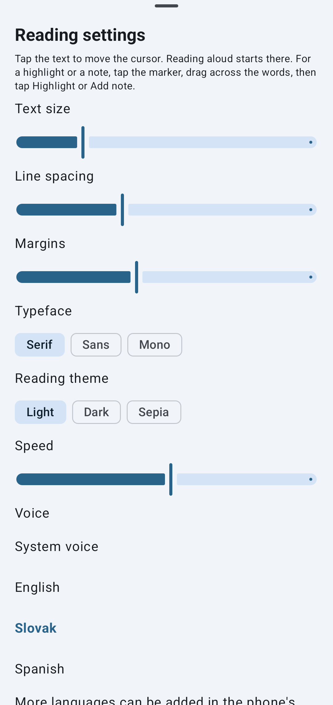

Core
Apri il libro. Lascialo parlare.



Notte. Una piccola luce. Una pagina.
Apri un libro che vive nel telefono. Esci dalla stanza. Torni. Il cursore è ancora sulla parola che hai lasciato.
Quando gli occhi si stancano, una voce prende quella parola e cammina la riga. Non è una persona in poltrona. Il libro che parla. La fermi. La frase aspetta.
I tuoi file. EPUB, PDF, MOBI. Una cartella che nomini. Gutenberg e gli altri cataloghi liberi quando una rete è vicina.
Segni a margine. Un segnalibro. Nessun account. Niente pubblicità. Per un lettore che a volte ascolta e non spedisce il file.